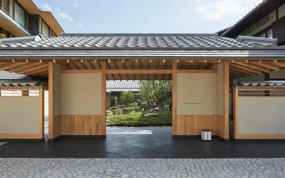
#1 95%StayOddsPark Hyatt Kyoto
Higashiyama, Kyoto, Japan
Luxurious stay with exceptional service • Pristine location adjacent to historical sites
Compare Japan's finest luxury hotels in Tokyo, Kyoto, and Amanemu with verified MICHELIN Keys, Forbes Five-Star awards, and linked editorial reviews.
Ordered with First-Hand Verified stays first, followed by highest verified guest scores. Save favourites to your zero-login Shortlist or jump into Head-to-Head Compare.

#1 95%StayOddsLuxurious stay with exceptional service • Pristine location adjacent to historical sites
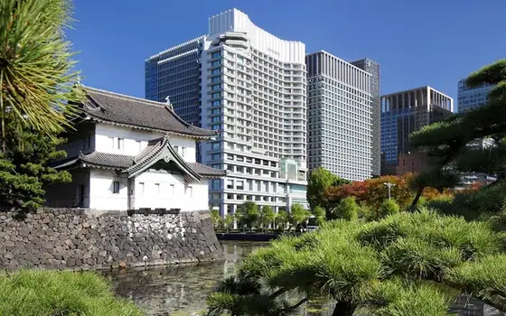
#2 95%StayOddsExceptional staff/service • Outstanding location and palace/park views
Exceptional service and attentive staff • Prime, walkable location near trains and shopping
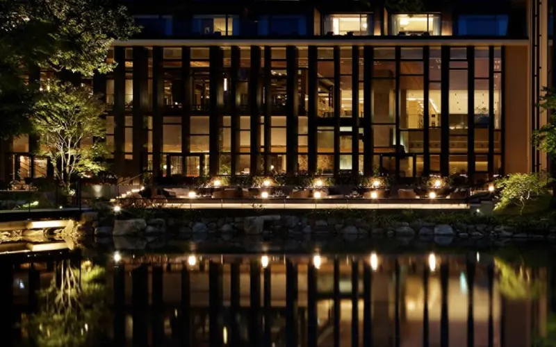
#4 93%StayOddsModern Zen sanctuary in Higashiyama centered around an 800-year-old Shakusui-en pond garden and traditional tea house, with spacious rooms and an indoor spa pool steps from historic temples
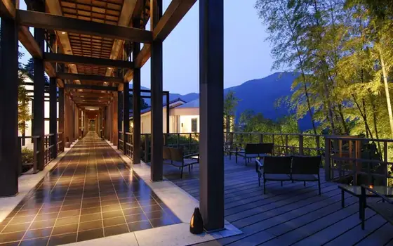
#6 94%StayOddsFormer imperial family retreat in Hakone's mountains — Three MICHELIN Key traditional ryokan with shoji-screen garden suites, volcanic hot-spring onsen baths, and seasonal kaiseki dining
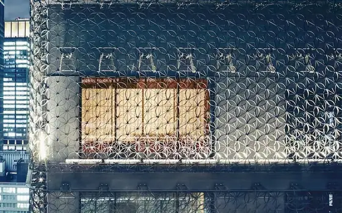
#7 94%StayOdds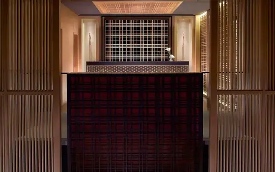
#8 93%StayOddsExcellent breakfast quality • Charming atmosphere and hospitality
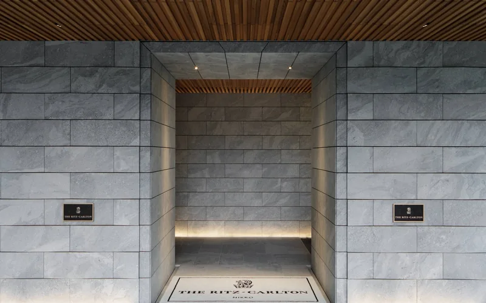
#9 94%StayOddsBeloved on r/chubbytravel & FlyerTalk as the first Ritz-Carlton with authentic natural sulfur hot-spring onsen baths, set beside tranquil Lake Chuzenji and Mount Nantai with minimalist…
Exceptional, attentive staff and service • Excellent location with stunning views
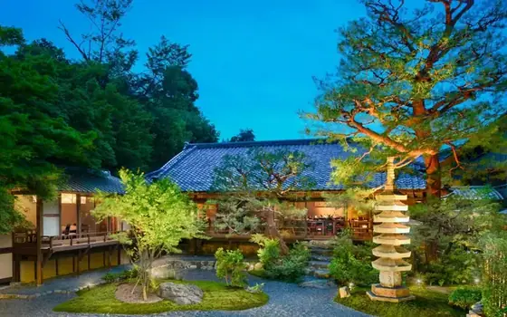
#11 92%StayOdds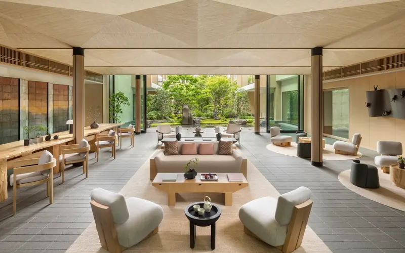
#12 90%StayOddsContemporary Higashiyama wellness sanctuary inspired by Heian-era craft and The Tale of Genji, featuring a quiet Zen courtyard, raku-yaki ceramic art, seasonal dining, and holistic spa
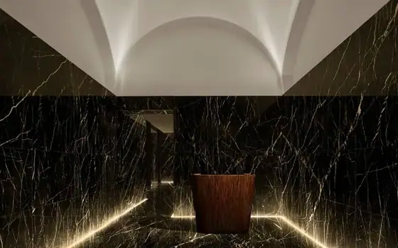
#13 87%StayOddsLoyal Marriott member • Regular visitor of bars and restaurants
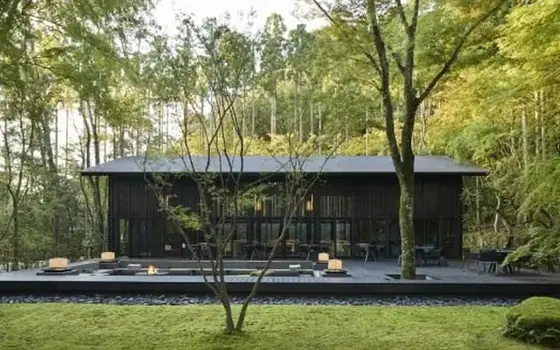
#14 88%StayOddsHidden inside 80 acres of ancient moss-covered secret gardens with open-air mineral onsen hot springs and Kerry Hill pavilions
Soaring 30m washi-paper shoji lobby 33 floors above Tokyo, granite deep-soaking furo tubs, and a 30m skyline indoor pool
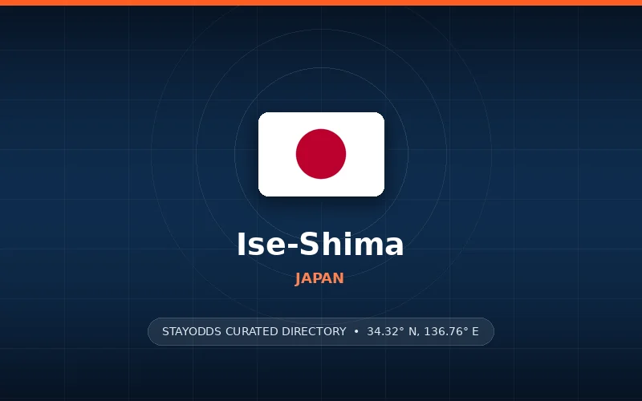
#16 AwardOfficial AwardKerry Hill-designed 24-suite & 4-villa ryokan sanctuary in Ise-Shima National Park overlooking Ago Bay, with private mineral hot-spring onsen baths in every suite and open-air Aman Spa…
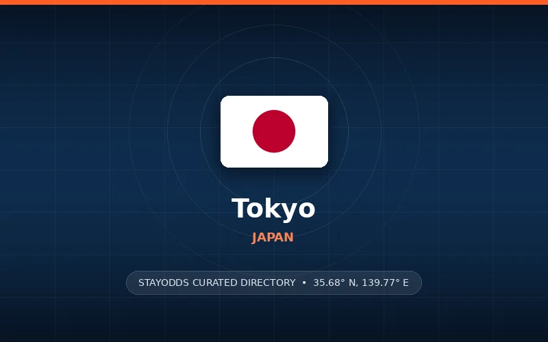
#17 92%StayOddsOccupying floors 40–45 of Tokyo Midtown Yaesu with Italian craftsmanship, panoramic city and Mt. Fuji views, Niko Romito dining, and a 25m emerald-mosaic indoor pool
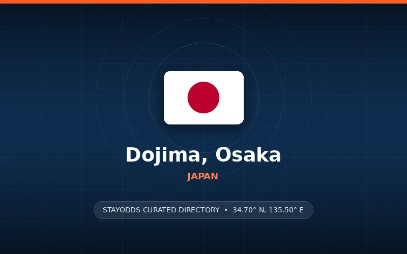
#18 OpenBreakdownOpened August 2024 as Osaka's luxury benchmark featuring a dedicated modern ryokan floor (GENSUI) with tatami suites and tea lounge, sky-high indoor pool and Japanese ofuro baths on the…
Private wooden riverboat arrival up the Oi River gorge, tatami heritage pavilions, and Michelin-starred kaiseki dining
4,000 sqm wellness & boxing/hydrotherapy sanctuary, Tokyo Tower views, and 8 vibrant restaurants at half Aman Tokyo's rate
Sky-high Shinjuku icon famed for its New York Grill & Bar views, 47th-floor Club on the Park pool, and quiet residential elegance